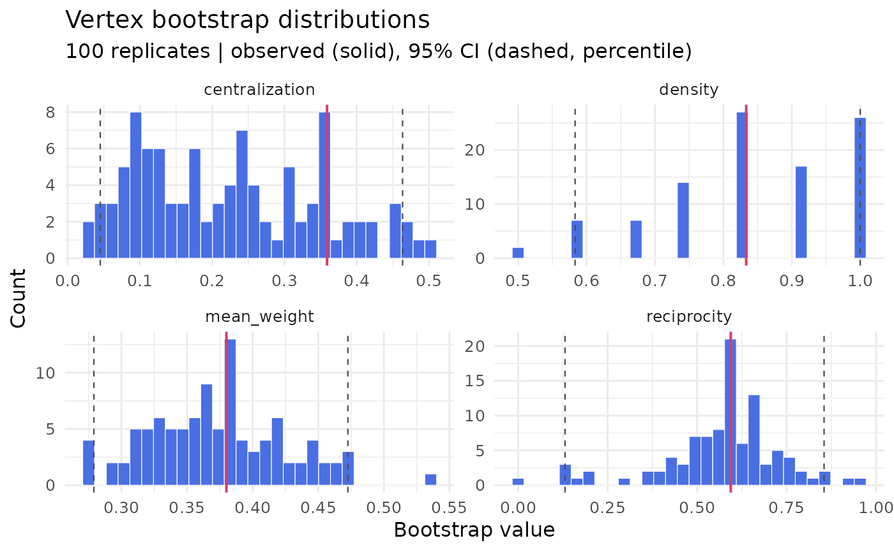

vertex_bootstrap() resamples the nodes of one observed network and
returns bootstrap standard errors, bias and confidence intervals for
network-level statistics: density, mean weight, strength centralisation
and, for a directed network, reciprocity, plus any statistic of your own
(Snijders & Borgatti 1999). It needs only the weight matrix, so it works
on any netobject or cograph_network, including those that carry no
data, such as the constituents of build_mlvar() or the networks
as_tna() returns for an mcml object built from a weight matrix, and
on a plain square weight matrix.
The intervals describe how much a whole-network statistic depends on
which nodes happen to make up the network, with the edge weights taken
as given. They say nothing about how the weights themselves vary from
sample to sample; when the sequences or rows behind a network are
available, bootstrap_network() resamples those instead. Two networks
are compared on these statistics with vertex_compare().
Usage
vertex_bootstrap(
x,
iter = 1000L,
ci_level = 0.05,
ci_method = c("percentile", "basic"),
statistics = NULL,
statistic_fn = NULL,
directed = NULL,
seed = NULL
)
# S3 method for class 'net_vertex_bootstrap'
print(x, digits = 3, ...)
# S3 method for class 'net_vertex_bootstrap'
summary(object, ...)
# S3 method for class 'net_vertex_bootstrap'
plot(x, bins = 30, ...)Arguments
- x
The network: a
netobject(frombuild_network()or any builder), acograph_network, or a square numeric weight matrix, with at least 3 nodes. Other input raises an error. For theprint()andplot()methods: anet_vertex_bootstrapresult.- iter
The number of bootstrap replicates, at least 2. Default
1000.- ci_level
The significance level of the confidence intervals, not their coverage:
0.05(default) gives 95% intervals. Must lie strictly between 0 and 1.- ci_method
How the intervals are formed.
"percentile"(default) takes theci_level / 2and1 - ci_level / 2quantiles of the replicates;"basic"reflects them around the observed value,2 * observed - upperand2 * observed - lower(Davison & Hinkley 1997, eq. 5.6).- statistics
The built-in statistics to compute (see Details). Default
NULL: all of them, withreciprocityonly for a directed network. A name that is not available for the network, such asreciprocityon an undirected one, raises an error.- statistic_fn
Statistics of your own, as a named list of functions, each taking the weight matrix and returning a single number. They are computed beside the built-ins on the whole matrix, diagonal included. Default
NULL.- directed
Whether the network is directed, which decides how collisions are filled and whether
reciprocityis available. DefaultNULLreads the network's own directedness, and for a matrix (or a network that records none) treats an asymmetric matrix as directed.- seed
A seed passed to
set.seed()before resampling, so the run can be repeated; the session's random-number stream then continues from it. DefaultNULLuses the current stream.- digits
For the
print()method: the number of decimals shown. Default3.- ...
Not used.
- object
For the
summary()method: anet_vertex_bootstrapresult.- bins
For the
plot()method: the number of histogram bins. Default30.
Value
A net_vertex_bootstrap object. Printing it shows the number of
nodes, the directedness, the number of replicates and the interval
level and method, then the summary table; summary() returns that
table as a data frame with one row per statistic and the columns
statistic, observed, boot_mean, boot_sd, bias
(boot_mean - observed), ci_lower and ci_upper; plot() draws the
bootstrap distributions. The object holds:
- summary
The summary table described above.
- boot_stats
A matrix of the replicate values,
iterrows by one column per statistic.- observed
The observed statistics, as a named numeric vector.
- iter, ci_level, ci_method, directed, n_nodes
The settings used and the number of nodes.
The print() method returns its input invisibly, summary() the
summary data frame and plot() a ggplot object.
Details
Each replicate draws n node indices with replacement and sets
W_b[i, j] = W[idx_i, idx_j]. When the same original node is drawn for
two different positions, the off-diagonal cell between them would be a
self-pair; following Snijders & Borgatti, it is filled with the weight of
a randomly chosen pair of distinct original nodes. Diagonal cells keep the
original self-weight of the resampled node (W[idx_i, idx_i]), since
self-loops are meaningful in transition networks. For an undirected
network the substitution is made in the upper triangle and mirrored, so
every replicate stays symmetric.
The built-in statistics are computed on the off-diagonal cells:
densityThe share of non-zero off-diagonal cells.
mean_weightThe mean of the non-zero off-diagonal weights.
centralizationFreeman-type strength centralisation,
sum(max(s) - s) / ((n - 1) * max(s)), wheresis each node's total (in plus out) absolute strength without its self-loop: 0 when every node has the same strength, approaching 1 for a star.reciprocityDirected networks only. Weighted reciprocity,
sum(pmin(|W|, |t(W)|)) / sum(|W|)over the off-diagonal cells: the share of the total weight that is reciprocated.
A statistic is NA when it is undefined: mean_weight with no non-zero
cell, centralization when every strength is 0, reciprocity when the
total weight is 0. NA replicates are left out of the bootstrap mean,
standard deviation and quantiles.
Methods
plot() draws a histogram of the replicate values for each statistic,
one panel per statistic with its own scales, a solid line at the observed
value and dashed lines at the interval bounds.
References
Snijders, T. A. B., & Borgatti, S. P. (1999). Non-parametric standard errors and tests for network statistics. Connections, 22(2), 161-170.
Davison, A. C., & Hinkley, D. V. (1997). Bootstrap Methods and their Application. Cambridge University Press.
See also
bootstrap_network for case-resampling edge-weight
inference, centrality_stability for case-dropping
centrality stability.
Examples
seqs <- data.frame(
T1 = c("plan", "code", "debug", "plan", "test", "code"),
T2 = c("code", "debug", "code", "plan", "code", "test"),
T3 = c("debug", "code", "plan", "code", "debug", "plan"),
T4 = c("test", "plan", "test", "debug", "plan", "code")
)
net <- build_network(seqs, method = "relative")
vb <- vertex_bootstrap(net, iter = 100, seed = 1)
summary(vb)
#> statistic observed boot_mean boot_sd bias ci_lower
#> 1 density 0.8333333 0.8433333 0.13415153 0.01000000 0.58333333
#> 2 mean_weight 0.3800000 0.3734656 0.05149123 -0.00653441 0.27899554
#> 3 centralization 0.3589744 0.2255932 0.12632830 -0.13338118 0.04511327
#> 4 reciprocity 0.5939850 0.5726307 0.16772881 -0.02135424 0.13107527
#> ci_upper
#> 1 1.0000000
#> 2 0.4725536
#> 3 0.4635149
#> 4 0.8545707
# \donttest{
plot(vb)

# }